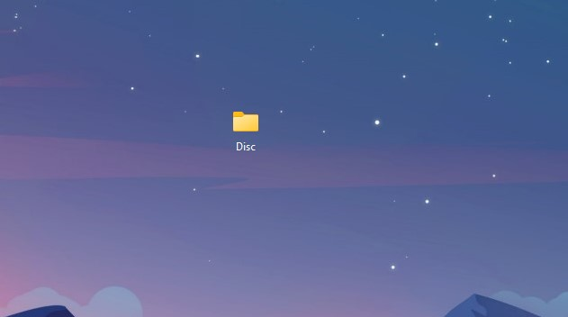
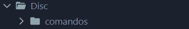
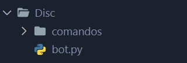
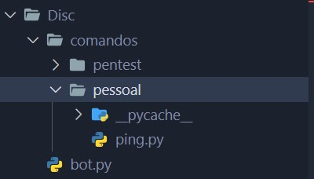
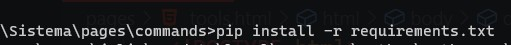

Passo 1: Criando uma pasta
Primeiro, crie uma pasta com o nome desejado, evitando caracteres especiais. Se desejar separar palavras, utilize o "_" (underline). Por exemplo, "Dev Brasil" seria "Dev_Brasil".
Passo 2: Criando a pasta "comandos"
Em segundo lugar, crie a pasta "comandos" dentro da pasta que você escolheu. Isso é crucial para organizar e otimizar o funcionamento do seu bot.
Passo 3: Adicionando o arquivo main.py dentro da pasta
Em seguida, coloque o arquivo main.py, baixado do site, dentro dessa pasta recém-criada. Esse passo é fundamental para o funcionamento do bot.
Passo 4: Adicionando subpastas e colocando os comandos dentro delas
Agora, adicione os comandos que foram baixados do site em subpastas separadas. Por exemplo, crie uma pasta chamada "pessoal" e coloque os comandos relacionados lá dentro, como o comando "ping" e outros.
Passo 5: Configurando o ambiente
Para executar o bot, certifique-se de ter a versão mais recente do Python instalada no seu computador. Use o comando "pip install -r requirements.txt" encontrado na pasta inicial do criador para configurar as dependências necessárias.
